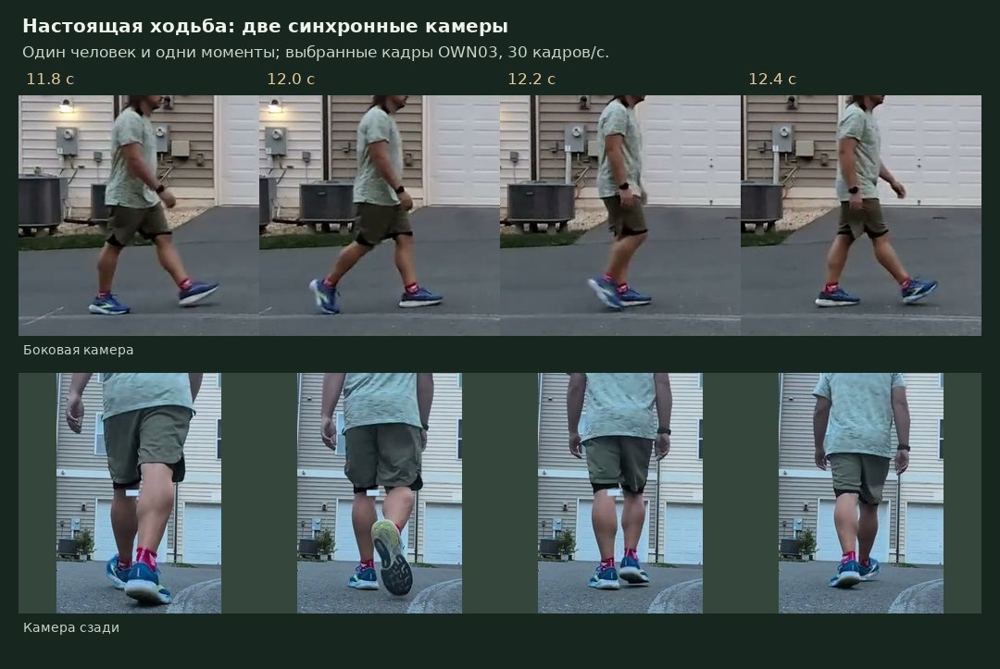
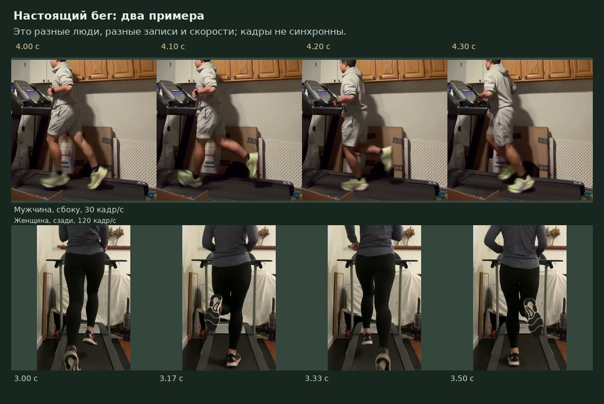

Примеры и новая проба
Для этой версии я сверялся с записями людей и другими анимированными моделями. Это разные люди, скорости и скелеты: кадры помогают увидеть фазы шага, но не являются эталоном для каждого персонажа.
Новая проба в движении
Ожидание, ходьба, бег и остановки спереди, сбоку и сзади. Камера следует за персонажем; точки на земле добавлены только для этой записи. Для управления и разворотов вернитесь в сцену.
Реальные люди
Посмотрите на перенос и опору стопы, положение колена и движение рук. Исходные видео открываются по ссылкам при наличии интернета.


Другие анимированные модели
Эти кадры показаны на другом манекене из HumanMotionCraft. Ходьба основана на 100STYLE, бег — на CMU; это исследовательские примеры, а не точные кадры новой сцены.